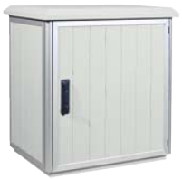

Dimensions of SZD cabinets
The SZD cabinet has a modular design. The main part of the cabinet is made of panels (which are fastened by latches) and aluminium profiles. both panels and profiles can be cut to any length. This type of design makes it possible to achieve the desired cabinet dimensions. Every cabinet is designed and manufactured on individual request (together with interior installation – it is possible to create all types of partitions and supporting structures of the cabinet).As a standard, the technology allows for the manufacture of cabinets with single or double leaf doors. 